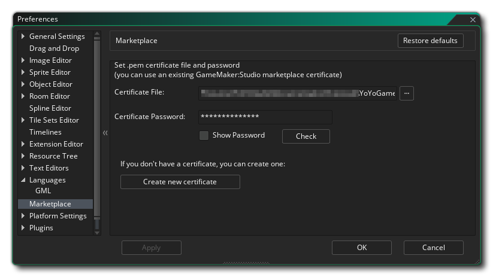

Las Preferencias del mercado se usan para configurar el Certificado del mercado para cargar o comprar activos. El formulario de certificado consta de las siguientes secciones para cuando ya haya creado un certificado:
- Archivo de certificado: esta sección es donde especifica el *.pem archivo que el Marketplace utiliza para la certificación de activos. Si tiene un certificado creado previamente, puede hacer clic en el botón del explorador de archivos aquí y agregarlo al foro, pero si no tiene un certificado y desea crear uno, debe omitir toda información aquí y, en su lugar, hacer clic en el Crear un nuevo botón de certificado explicado a continuación.
- Contraseña del certificado: Aquí debe ingresar la contraseña del certificado para el archivo seleccionado arriba. La contraseña se crea cuando crea por primera vez *.pem archivo (consulte Crear un nuevo certificado, a continuación) y se vinculará irreversiblemente al archivo de certificado creado.
- Comprobar: una vez que haya completado los campos anteriores, debe hacer clic en este botón para asegurarse de que la contraseña y la selección del archivo sean correctas y funcionen juntas.
Si no ha creado previamente un archivo de certificado para usar Marketplace, debe hacer clic en el botón etiquetado Crear nuevo certificado en la parte inferior de este formulario. Cuando lo haga, se abrirá una nueva ventana solicitando que ingrese la siguiente información:
- Nombre del editor: este es el nombre que se usará como el nombre del editor para el activo. Dentro del panel del Mercado puede configurar diferentes editores si lo necesita y cada uno debe tener su propio editor correspondiente *.pem archivo de certificado.
- Contraseña de certificado: aquí debe proporcionar una contraseña única para que se cree el archivo de certificado. Tenga cuidado con lo que elija, ya que no puede cambiarlo más tarde y, si no tiene la contraseña correcta para el archivo de certificado en las secciones anteriores, no podrá actualizar ningún activo existente del Mercado (ni cargar los nuevos).
Con estos detalles, puede hacer clic en el botón Crear certificado para generar el *.pem archivo. Se le pedirá que brinde una ubicación para guardar y un nombre para el archivo, y debe tomar nota de esto para futuras referencias. Una vez hecho esto, el nuevo archivo y la contraseña se agregarán automáticamente a los campos de formulario enumerados anteriormente y podrá hacer clic en el botón Verificar para comprobar que el certificado se haya generado correctamente.